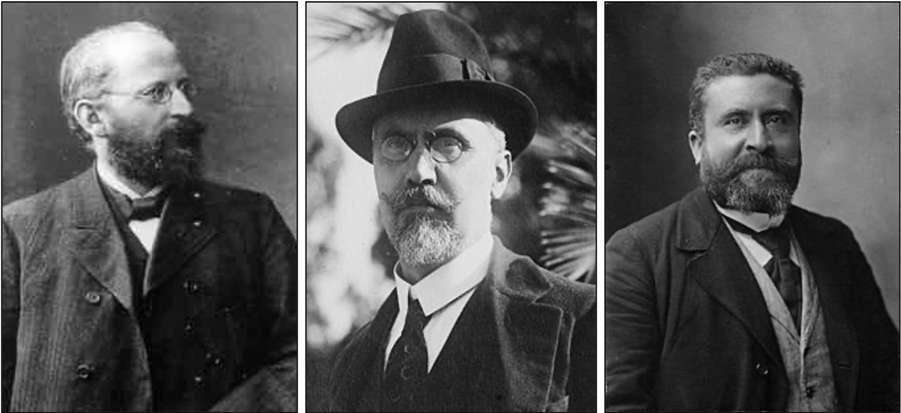
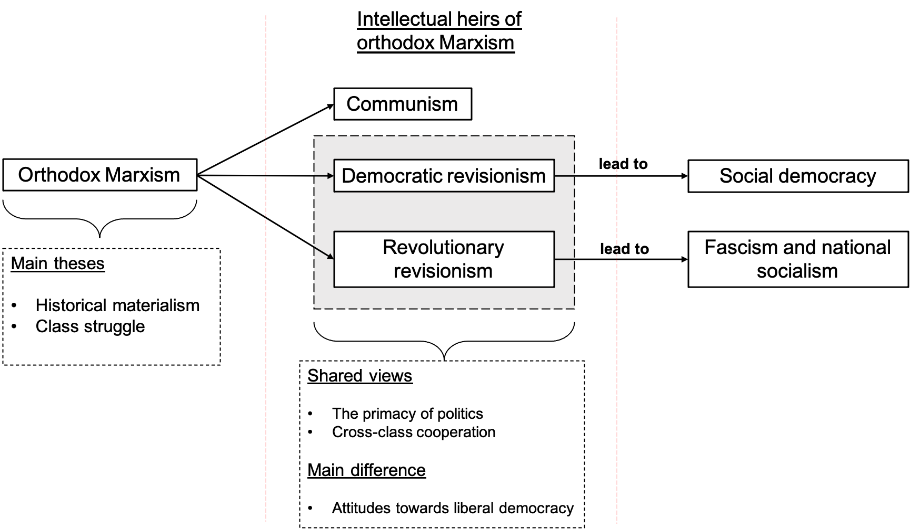

Time to briefly review the first of my summer readings: Sheri Berman’s The Primacy of Politics: Social Democracy and the Making of Europe’s Twentieth Century (2006, Cambridge University Press; henceforth, TPP). Sheri Berman is a qualified political commentator in several media, and all the stuff I had read so far from her (mostly from Social Europe) was of uttermost quality. That is why I was really looking forward to reading any of her books.
And it turned out that TTP met all my expectations: this is arguably not only one of the best books that I have read in the last year, but probably in my whole life. TPP constitutes an excellent exercise in what Berman calls a qualitative analytic narrative, that is, “a story that draws on both political and intellectual history to show [how] the interplay of ideological supply and demand” (p. 18) can help to account for the political development of certain ideologies. More specifically, TPP is intended at explaining the convoluted maturing and eventual triumph of European social democracy, which, according to Berman, constitutes “the most successful ideology and movement of the twentieth century”, as “[i]ts principles and policies undergirded the most prosperous and harmonious period in European history by reconciling things that hitherto seemed incompatible –a well-functioning capitalist system, democracy, and social stability” (p. 18). Berman’s book is not only informative but engaging, making reading what otherwise would be rather dense chapters a complete pleasure. In addition, bold and suggestive new ideas are advanced it TPP, while at the same time its main storyline is clear, simple, and plausible, making it easy to explain and remember. As I recount it, it can be summarized as follows:
1.- Capitalist economic development at the end of the nineteenth century caused multiple societal disruptions, particularly atomization, wealth disparities, labor exploitation, and the like.
2.- To help explain these disruptions, as well as to provide the working class with an instrument to counteract them, Marxist ideology emerged. Marxism, at least in its orthodox flavor, was characterized by two main theses: historical materialism and class struggle. Historical materialism is the belief that history is determined by economic forces acting in a lawful way and that the advent of socialism after capitalism’s collapse constitutes a historical necessity. Class struggle is the main economic force posited by historical materialism, and it amounts to the idea that class conflicts play a vital role in the unfolding of historical trends. Although putatively descriptive doctrines, practical consequences followed from both historical materialism and class struggle, particularly (1) that socialist organizations need not deliberately act to bring about socialism (because it will automatically arrive following capitalism collapse) and that the worker’s organizations should not cooperate with other social classes (because otherwise they would undermine the force of class struggle). In addition to historical materialism and class struggle, orthodox Marxism included some other ideas, such as that of the growth of the proletariat class up to the point of eventually becoming the immense majority of society.
3.- Despite constituting the only ideology in the proletariat left (left-leaning, or radical, liberalism was not very popular among workers), orthodox Marxism quickly proved to be not only empirically wrong but also politically suicidal. From an empirical point of view, at the turn of the century it became fairly clear that most orthodox Marxist predictions, such as those of the rapid growth of the working class or the imminent collapse of capitalism, had failed: workers were not growing in number, and capitalism had already shown a remarkable capacity for reinventing itself. From a political point of view, orthodox Marxism was suicidal inasmuch as, because of its commitment to historical materialism, it drove socialist parties to refuse to take political action to reform capitalism in a way that could be beneficial to workers. That is, instead of promoting institutional changes, orthodox Marxism induced paralysis in many socialist parties. Furthermore, inspired by the doctrine of class struggle, orthodox Marxists refused to collaborate with other social classes, thus condemning themselves to minority positions in parliaments.
4.- In response to these problems in orthodox Marxism, in the last decades of the nineteenth century several alternative views were put forward. One of these can be thought of as the direct forerunner of communism. Communists such as Lenin accepted most of the precepts of orthodox Marxism but believed that, instead of letting history unfold through iron laws, workers’ organizations should actively and violently spur capitalism's demise. The focus of Berman’s book lies however not on communism, but on the two remaining alternatives to orthodox Marxism, namely democratic revisionism and revolutionary revisionism. The common thread uniting democratic and revolutionary revisionists was their belief in what Berman calls the primacy of politics and cross-class cooperation. The primacy of politics is a belief in the power of human agency to bring about political change, and in this sense is opposed to the economic determinism of historical materialism. Cross-class cooperation, contrary to class struggle, involves establishing alliances with other sectors of society in a clear call for national and/or people’s unity. Democratic and revolutionary revisionists, however, strongly differed in their views on parliamentary democracy and liberalism.
5.- Democratic revisionists were left-leaning intellectuals and politicians that rejected both historical materialism and class struggle while maintaining a commitment to parliamentary democracy and liberal principles. In this sense, democratic revisionism grouped all these critics of Marxism that lay the ground for social democracy. Prominent democratic revisionists were Eduard Bernstein in Germany, Ivanoe Bonomi in Italy, and Jean Jaurès in France (see below). While orthodox Marxists recommended quietism and faith in historical law to bring about socialism, democratic revisionists believed that socialism would only emerge through conscious and determined political action aimed at democratically reforming capitalism. To do that, democratic revisionists called for cross-class alliances with peasants, white-collar workers, and other elements of the middle class. This entailed, as previously said, an abandonment of class struggle and a rapprochement to nationalism. All democratic revisionists saw socialism as the most consequent heir of liberalism, and therefore defended democracy and parliamentarism not only as means of achieving socialism, but as a central element of their doctrine. As Berman convincingly argues, even though democratic revisionists were laying the ground for a new and resolutely non-Marxist left, they presented themselves as merely reforming Marxism while remaining loyal to its main principles.

6.- Revolutionary revisionists included those individuals that switched historical materialism and class struggle for the primacy of politics and cross-class alliances, while rejecting democracy and parliamentarism, which were conceived as decadent institutions. Some influential revolutionary revisionists were Georges Sorel in France and Enrico Corradini in Italy. Unlike their democratic counterparts, revolutionary revisionists abhored liberalism and defended a conservative view of nationalism. Although many came initially from the left (including Benito Mussolini), Berman convincingly shows how revolutionary revisionists were the direct ancestors of fascists and national socialists.
7.- And here comes a bold and extremely suggesting idea put forward by Berman in TPP: social democrats and fascists do not only come from the same bud in the tree of political ideologies (those disenchanted with orthodox Marxism) but also share a considerable number of political ideas, particularly the primacy of politics and cross-class cooperation. But as becomes even clearer further in her book, social democrats and fascists also shared their views on how to tame capitalism to promote the goals of social cohesion and the common good to a fairly large degree. The crucial difference, of course, is that social democrats managed to do this while defending and promoting individual rights and ideological pluralism, whereas fascists did it in a dictatorial and racist way.
8.- But let’s continue with our storyline. Although they grew in number with the coming of the twentieth century, democratic revisionists did not manage to seize the power of socialist parties. This entailed that their ideas were only accepted in the socialist movement little by little and after fierce battles with their orthodox comrades. To a good extent, this caused the socialist parties to be seen by most voters as unable to deal with the difficult interwar political situation, thus paving the ground for the growth of both communists and fascists.
9.- Revolutionary revisionists had, on the contrary, a much more straightforward path: they quickly broke up with the left and cobbled together a mix of national conservative, antidemocratic, and socialist ideas into a new (and for many attractive) extreme right ideology. In the economic realm, this innovative mix sought not to abolish capitalism but to control it. In that sense, fascism presented itself as a third way between unbridled capitalism (which had caused so much dissatisfaction in large portions of the population) and communism (rejected by many because of its insistence on materialism and class struggle). The problem, again, was that it came at a high cost: that of the worst kind of racism humankind has ever witnessed, and complete suppression of civil liberties.

10.- The only exception to this historical trend (a partial defeat of interwar democratic revisionists and a complete triumph of their revolutionary revisionist counterparts) is found in one apparently unimportant –yet unique and special– Nordic country, namely Sweden, to which Berman devotes a whole separate chapter. Swedish social democrats, because of their peripheral position in the Socialist International and the pervasive influence of some thoughtful and charismatic leaders (particularly Hjalmar Branting, Per Albin Hansson, and Tage Erlander), managed to turn the primacy of politics and cross-class cooperation into majority positions in the SAP (Sveriges Socialdemokratiska Arbetareparti) right from the beginning. This turned the SAP into a massive people’s party that even before the beginning of WWII gained enough support to start to build a generous welfare state that eventually managed to achieve a remarkably high degree of equality, social cohesion, and economic prosperity while maintaining and expanding democratic civil rights. The recipe for success was the sum of a strong commitment to democracy, a pragmatic and undogmatic conception of Marxism, the adoption of some right-wing nationalist themes, and a shift in economic strategy from abolishing capitalism to democratically controlling it.
11.- Despite failing to seize the power of socialist parties during the interwar years, after WWII social democratic ideas came to be adopted by most of the democratic political spectrum. Indeed, the postwar political and economic consensus was that, in order to avoid the upsurge of fascism and national socialism, capitalism no longer should be left on its own. Instead, it had to be democratically managed and controlled in order to promote both the common good and a decent living standard for everyone. In this sense, the ideas of the post-war political consensus showed a strong resemblance to the doctrines of the pioneer democratic revisionists, who envisioned a system in which the extreme success of capitalism in delivering material goods could be put to the service of the whole society while maintaining a functional democracy that protects individual rights. After the war, not only social democrats, but also liberals and Christian democrats adopted measures intended at extending the welfare state and controlling capitalism's most pernicious effects. In doing that –that is, in adopting the social democratic ideas of Berstein, Jaures, and many others– social democrats finally managed to inspire the creation of the most prosperous, free, and equal societies ever seen in the history of Europe (and in the history of humanity at large, I would add). That’s why we are qualified to say, according to Berman, that social democracy has been the most successful ideology of the twentieth century.
So far so good. But what about now? Is there any moral we can get from the history of social democracy to guide us in facing the political challenges of the twenty-first century? After briefly reviewing the lot of social democratic parties in the postwar era, Berman concludes her book with some pieces of advice for a modern social democratic agenda. Briefly put, Berman identifies two main challenges for modern-day Western societies.
The first of these is economic globalization: nowadays markets operate at an international level. This entails that the political mechanisms of nation states have limited power when it comes to taming economic forces. Although globalization has clearly favored low-income countries, it has had disastrous consequences for the middle and working classes in developed countries, exacerbating income inequality. This, in turn, has given rise to extreme right populism, with its concomitant devastating effects on democratic stability. Berman convincingly argues that a twenty-first-century social democratic agenda must necessarily involve the construction and/or reinforcement of international institutions that can help put the until now unbridled market forces under democratic control. More specifically, in the European case, the institutions that must be reinforced are those that make up the European Union.
The second challenge according to Berman lies in multiculturalism and identity politics. Berman argues that social democrats have granted identity issues great attention at the cost of neglecting economic issues. While a necessary component of a progressive worldview, social democrats must not rely only on identity issues to attract voters, and instead must put forward a universalistic agenda that everyone, independently of her or his background, can share. Given that in today’s multicultural societies such an agenda cannot be based on ethnic and nationalistic motives, social democrats must build this new universalistic project as a sort of constitutional patriotism based on a generous welfare state.
In sum, I strongly recommend TPP not only to those interested in social democracy and the history of the left, but also to anyone interested in what a good academic book should look like, that is, engaging, bold, and innovative.
Reference
Berman, S. (2006) The Primacy of Politics: Social Democracy and the Making of Europe’s Twentieth Century. Cambridge University Press.